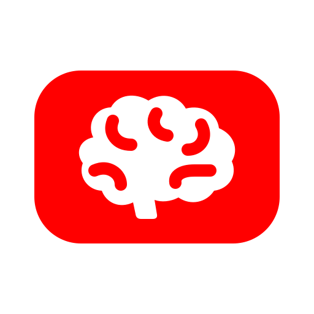
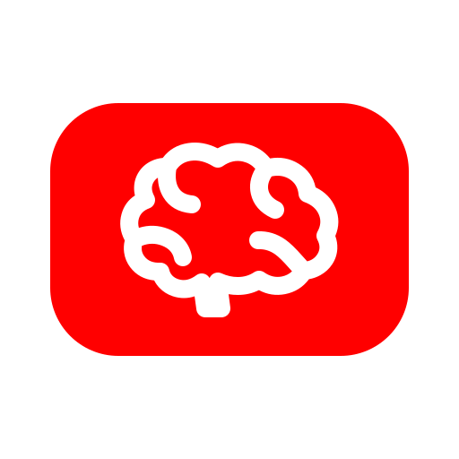

CONCEPT 11Solid BrainFive chunky folds in a solid side-profile silhouette.  64 px32 px On dark
CONCEPT 12Play FissureA clean play triangle becomes the brain’s central negative space. 64 px32 px On dark
CONCEPT 13Outline BrainA 20 px expanded outline gives the brain a lighter, technical feel.  64 px32 px On dark
CONCEPT 14Top BrainMirrored hemispheres and a bold central fissure form a frontal mark. 64 px32 px On dark